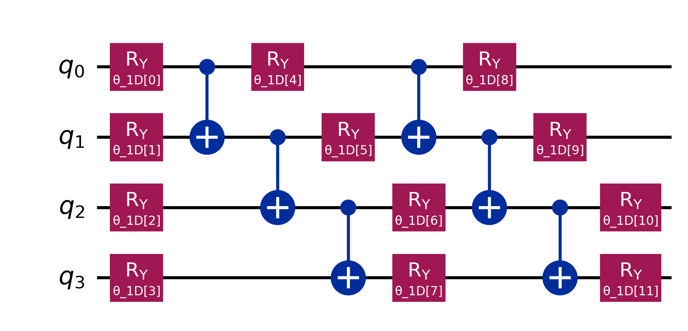

December 2025
Tools: Python, Qiskit

Noisy convergence for COBYLA and SPSA. The green trace is the 2D problem on a linear chip, which stays well above the matched runs.
For ECE 520 I used the variational quantum eigensolver to estimate the ground-state energy of a 4-qubit XYZ Heisenberg model. The variational principle says any trial state sits at or above the true ground-state energy, so a classical optimizer can push that energy down. The quantum circuit only prepares the trial state and estimates each Pauli term in the Hamiltonian. I ran the loop in Qiskit on the Aer simulator.
The model is an anisotropic Heisenberg Hamiltonian, with different couplings on X, Y, and Z and a field on each spin. The exact ground-state energy is about −4.37 on the chain and about −5.46 on the square. I crossed those two problem graphs with two chips, a linear chain and a square, so the four trials are matched 1D, matched 2D, a 2D problem on a chain, and a 1D problem on a square. The ansatz is EfficientSU2: two layers of Ry rotations and CNOTs, with the entanglement laid out like the problem. A missing link is routed with SWAP gates, and each SWAP is three CNOT gates. A depolarizing error of 0.03 on every CNOT makes that routing the source of the extra noise.
Without noise, the geometry barely changed the result. With noise, a 2D problem on a linear chip was the costly case. The compiler inserted six SWAPs, the depth went to 25, and the energy error was about 3.9, against about 1.6 and zero SWAPs for the matched 1D run. A 1D problem on a square chip needed one SWAP. With COBYLA its noisy error stayed near 1.53, in line with the matched 1D run, since the square already contains the chain. On the convergence plot, COBYLA flattened by about 20 iterations and often sat in a local minimum. SPSA was still descending near 100 iterations.